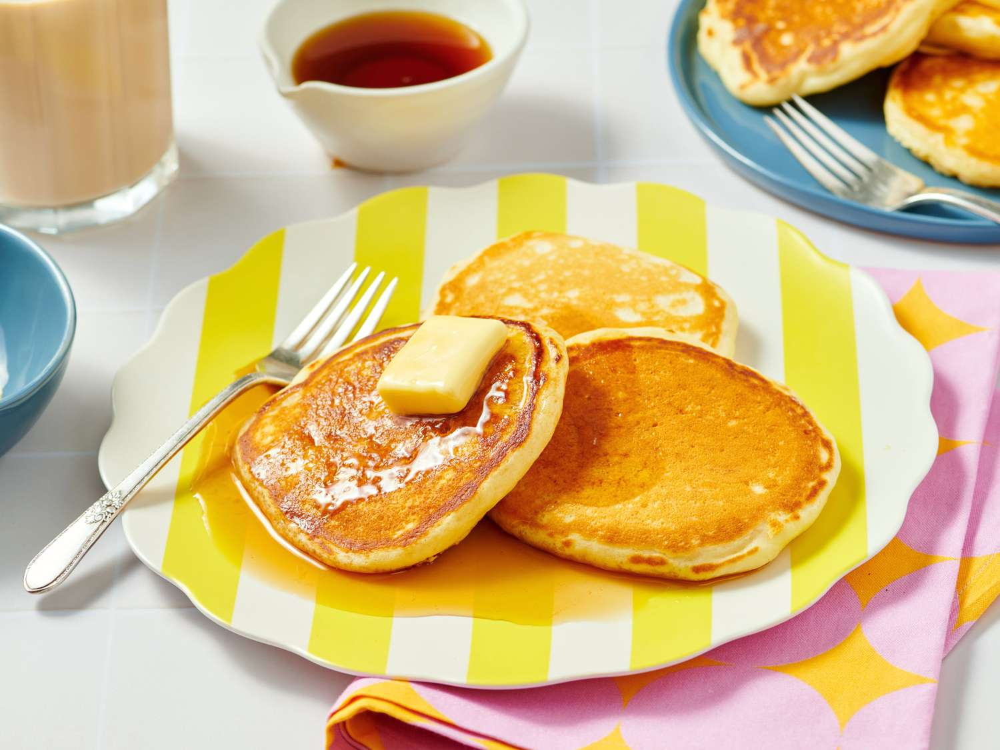

Rating 5/5
A Pancake, also known as a hotcake, griddlecake, or flapjack, is a flat type of batter bread like cake, often thin and round, prepared from a starch-based batter that may contain eggs, milk, and butter , and then cooked on a hot surface such as a griddle or frying pan. Archaeological evidence suggests that pancakes were probably eaten in prehistoric societies. The pancake's shape and structure varies worldwide. In England, pancakes are often unleavened and are thin. In Scotland and North America, a leavening agent is used (typically baking powder) creating a thick fluffy pancake. A crêpe is a thin pancake of Breton origin cooked on one or both sides in a special pan or crepe maker to achieve a lacelike network of fine bubbles. A variation originating from southeast Europe is palatschinke, a thin moist pancake fried on both sides and filled with jam, cream cheese, chocolate, or ground walnuts, but many other fillings—sweet or savoury—can also be used. Commercially prepared pancake mixes are available in some countries. Like waffles, commercially prepared frozen pancakes are available from companies like Eggo. When buttermilk is used in place of or in addition to milk, the pancake develops a tart flavor and becomes known as a buttermilk pancake, which is common in Scotland, Ireland and the US. Buckwheat flour can be used in a pancake batter, making for a type of buckwheat pancake, a category that includes blini, kaletez, ploye, and memil-buchimgae. When potato is used as a major portion of the batter, the result is a potato pancake. Pancakes may be served at any time of the day or year with a variety of toppings or fillings, but they have developed associations with particular times and toppings in different regions. In North America, they are typically considered a breakfast food and serve a similar function to waffles. In Britain and the Commonwealth, they are associated with Shrove Tuesday, commonly known as "Pancake Day", when, historically, perishable ingredients had to be used up before the fasting period of Lent.
